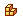
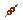
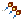
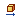
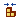
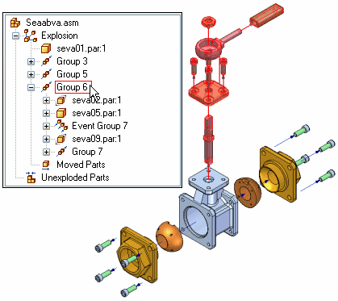
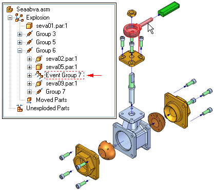

Explode PathFinder tab
Provides alternate ways of viewing and editing an exploded assembly. The Explode PathFinder tab displays the structure for the current exploded view configuration in a hierarchical list. The Explode PathFinder tab helps you work with the components that make up an exploded view.

This allows you to view the structure and perform edit operations on the current exploded view configuration. Some of the operations you can perform include:
-
You can select an explode event, then edit the offset or rotational value using the command bar.
-
You can use the commands on the shortcut menu to show and hide parts, collapse parts, show and hide flow lines, and so forth.
-
You can add and remove parts from explode Groups and Event Groups. This is useful when working with animations.
The following table explains the symbols used in Explode PathFinder:
|
Legend |
|
|---|---|
 |
Part |
 |
Assembly |
 |
Group |
 |
Event Group |
|
Linear Event |
|
|
Rotational Event |
|
 |
Moved Parts |
 |
Unexploded Parts |
Explode groups and event groups
The way the parts and subassemblies are arranged in the Explode PathFinder tab is based on the operations you performed to create the exploded view. These operations, or events, are collected into one or more explode operation collections in Explode PathFinder.
There are two types of explode operation collections: Groups and Event Groups. The groups and event groups are created automatically as part of the explosion creation process, but you can edit them later.
-
Groups
A Group collects all the parts and subassemblies that participate in a common explode vector. It is possible for a group collector to have additional groups nested within it. For example, if one part in the explode vector has parts branching off into a different explode vector, the branched parts will be in a group nested within the main group. The components within a group animate sequentially.
-
Event Groups
An Event Group collects all the components that will move simultaneously in an animation. For example, a pattern of fasteners would typically be in an Event Group. You can add parts to and remove parts from an event group.
Explode PathFinder and the graphics window
Similar to the PathFinder tab in an assembly, when you select an entry in Explode PathFinder, the associated parts highlight in the graphics window. For example, if you select a Group entry in Explode PathFinder, the parts associated with that entry highlight in the graphic window.

If you select a part in the graphics window, a box is displayed in Explode PathFinder to indicate where in the exploded view tree structure the selected part is located.

Explode configurations and explode events
When you save an exploded view configuration, each explode configuration captures a separate set of explode events. When you activate an exploded view configuration, the Explode PathFinder tab updates to list the events captured for the current configuration.
Adding and removing parts from event groups
You can add and remove parts from an Event Group to control which parts move simultaneously during an assembly animation. The Add To Event Group and Remove From Event Group shortcut menu commands in the Explode PathFinder tab allow you to make these types of changes. For example, you may want all the fasteners in an assembly to animate at one time, even though the results of the Automatic Explode command placed them in different explode event groups.
The Add To Event Group and Remove From Event Group commands are not available when the Animation Editor is displayed.
For more information on assembly animations, see the Creating Assembly Animations Help topic.
Reordering groups
You can change the order of an explode Group, but not an Event Group using the Explode PathFinder tab. This allows you to change the sequential order in which the parts move in an assembly animation.
Use the Select Tool to drag and drop an explode Group to a different location. Explode PathFinder displays a symbol to show where you can reposition the Group in the explode structure. The symbol changes if you drag the Group to an invalid location in the explode structure.
How do I
Explode an assembly automaticallyExplode individual parts in an assembly
Reposition a Part in an Exploded Assembly
Remove a part from an exploded assembly
Collapse a part in an exploded assembly
Drag an exploded part in an assembly
Unexplode an Assembly
Keep a subassembly intact when exploding
Unbind a subassembly
Drop flow lines
Display or Hide Flow Lines in an Exploded Assembly
Add Events to or Remove Events from an Event Group
Learn more
Creating exploded views of assembliesLook up more details
Auto-Explode commandAutomatic Explode command bar
Automatic Explode Options dialog box
Explode command
Explode command bar
Manual Explode Options dialog box
Explosion Properties dialog box
Reposition command
Reposition command bar
Remove command (Explode application)
Collapse command
Drag Component command
Drag Component command bar
Unexplode command
Bind Subassembly command
Unbind Subassembly command
Draw command (flow lines)
Draw command bar
Modify command
Modify command bar
Flow Lines command
Flow Line Terminators command
Show Flow Lines Command
Hide Flow Lines Command
Remove Event from Group Command
Add Event to Group Command
Display Configuration Options dialog box